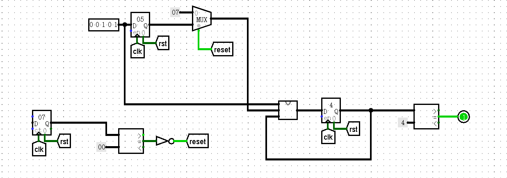
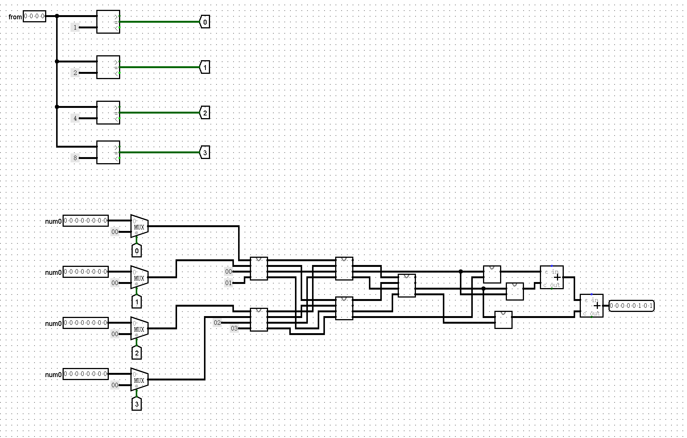

P0总结
课下实验
ftoi
- 谨慎考虑端点情况：15<=exp<=25
可能会有测试点专门卡端点情况
变补码：负数绝对值取反+1
grf
学会用译码器，寄存器enable
crc
组合逻辑无脑循环
学会用spliter
navigation
pre进阶
分东西南北四个方向
- 北00东01南10西11
- 注意到北南的第2位都是0
- 注意到东西的第2位都是1
- 用第2位来判断操作x还是y
- 用第一位来判断操作+还是-
判断预计值是否撞墙 若撞墙hit拉高且xy寄存器不使能
- 判断当下值是否到达 若到达则预计值清0
- 返回预计值
注意：
- 寄存器存储的是当下值
- 判断是否撞墙用预计值
- 判断是否到达用当下值
课上上机
时隔这么久才写,确实不应该()
周一惊险过了两个题，还是应该调整策略，先写完再统一debug
这么简单的东西,上机就觉得不简单了哈哈()
P0_ups_and_downs
特别的考点: 异步复位至7
初始化为7：依然使用计数器
考虑到是异步复位，所以赋值为7应该在寄存器之后，用到这个值之前

还有就是状态转移的问题
P0_binary_caculator
没什么好说的，输出的result是操作后的值，而不是寄存器的当下值
P0_intelligent_elevator
这里我们学习室友的一个想法，在比较之前把与from相同的楼层的人数赋值为0，这样后续操作起来就非常简单了~
预处理后的4个数字(及其编号)进行一个排序(因为只有很少的4个数，所以我们暴力排序，比较12，34，再比较找出最大最小，最后再比较中间的)
将排序后的编号进行相减即可的到答案(从排序最低的楼层出发，在按从上到下的顺序依次经过排序前三的楼层)

本博客所有文章除特别声明外，均采用 CC BY-NC-SA 4.0 许可协议。转载请注明来源 PlutoC！